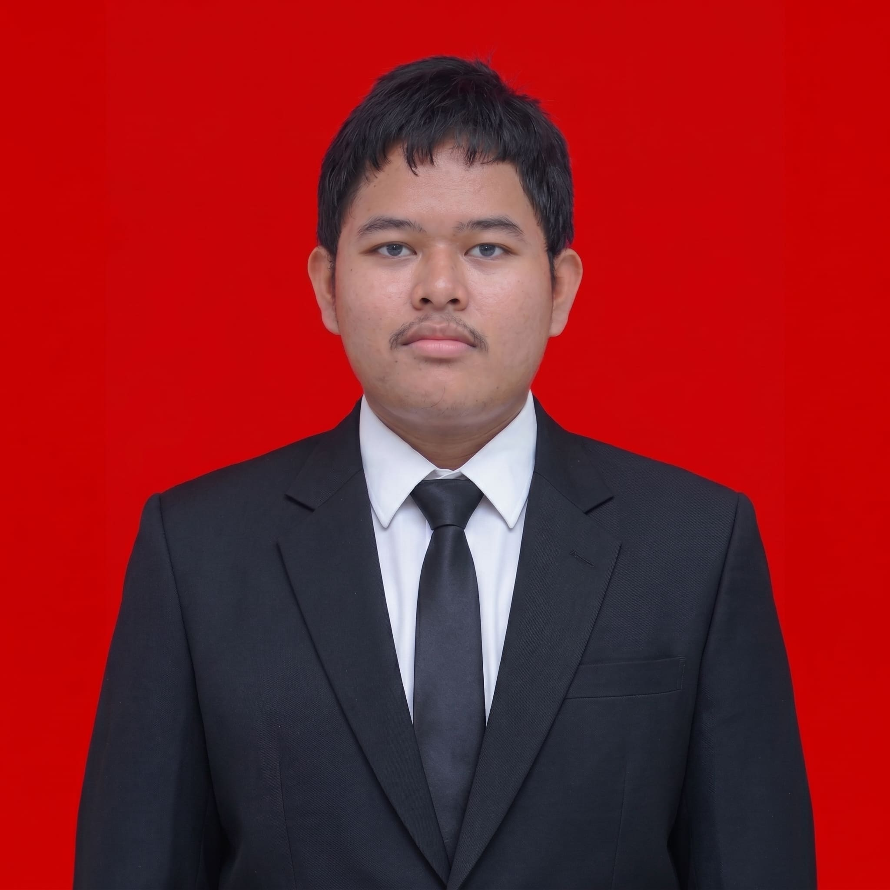

NIM: 3126521031
Program Studi: D3 Informatika
Halo! Kenalin, gue Raihan Salman Alfarisy, mahasiswa Teknik Informatika yang suka banget bereksplorasi di persimpangan antara dunia kreatif visual dan teknologi. Sehari-hari, aktivitas gue nggak jauh dari urusan visual—mulai dari bikin desain grafis sampai ngeracik video motion graphic biar pesan yang disampein bisa tampil lebih hidup, dinamis, dan enak dilihat. Buat gue, eksplorasi elemen visual itu bukan cuma soal estetika, tapi juga cara yang seru buat menuangkan ide dan cerita. Di sisi lain, sebagai anak IT, gue juga tetap menikmati serunya dunia koding. Waktu luang biasanya gue isi dengan bikin website sederhana atau ngulik logika algoritma pakai bahasa pemrograman C buat ngelatih cara berpikir komputasional. Perpaduan antara bikin karya visual yang ekspresif dan nulis kode yang terstruktur ini bikin rutinitas gue selalu variatif dan nggak ngebosenin. Secara keseluruhan, gue tipe orang yang selalu penasaran buat nyobain hal-hal baru dan terus mengasah skill. Baik itu lagi utak-atik timeline animasi di proyek desain, maupun lagi fokus mecahin error saat ngoding, tujuan gue selalu sama: pengen terus belajar, berkembang, dan menghasilkan karya yang nggak cuma fungsional tapi juga punya daya tarik visual yang kuat.